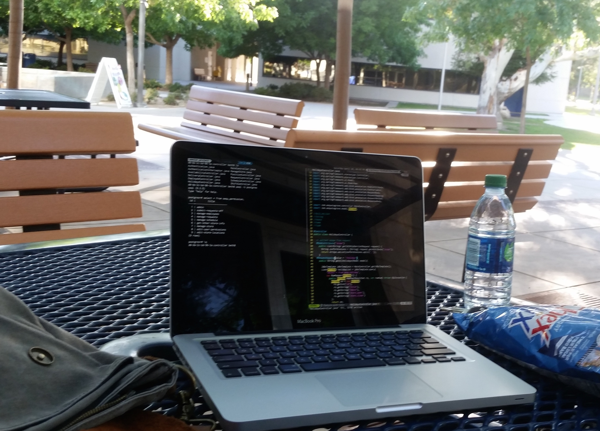

Hi! I'm Beth,
I’m a software developer who started college studying math and physics. After taking Java as an elective class, I was hooked.
I hadn't dreamed of finding a field of study that fit me so well! I could create instructions for the computer and it would carry them out perfectly as designed to. I could already see so many possibilities for real world and business application.
I currently work for a local custom software development company, Mershon Enterprises. I started as an intern in late 2013. I have been able to become a better developer by learning from more experienced developers and helping less experienced ones. I've been able to apply industry knowledge to school projects, and theoretical knowledge from school to work projects.
At Mershon Enterprises I have contribuited to two main web application projects. The first is a generalized data collection application. The second is a platform to create virtual memorials to honor loved ones and donate to relevant charities.